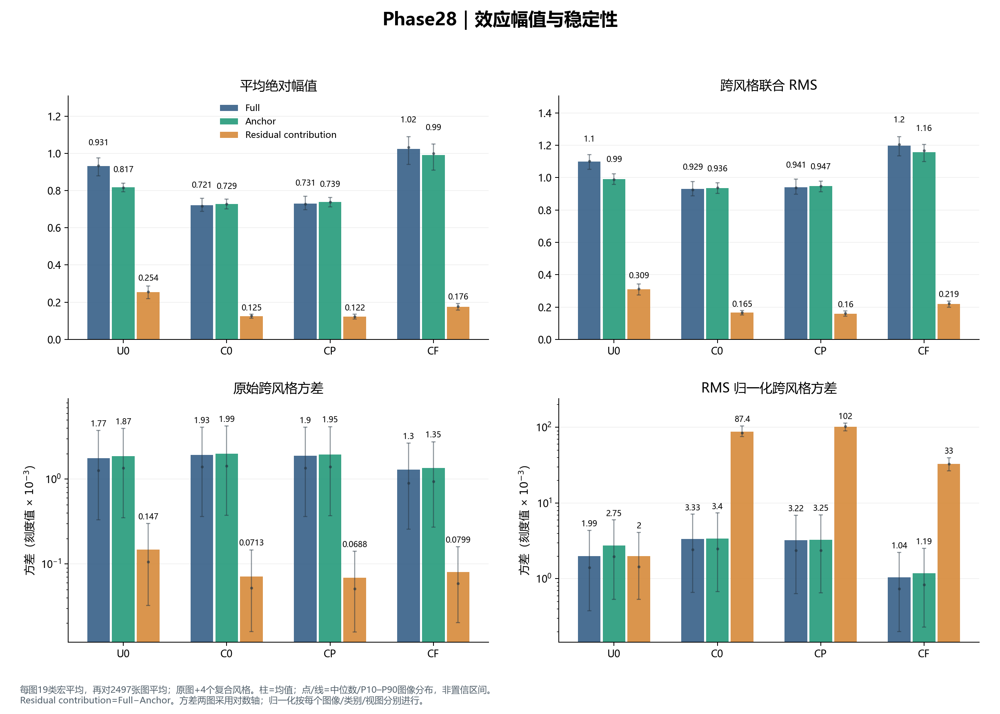
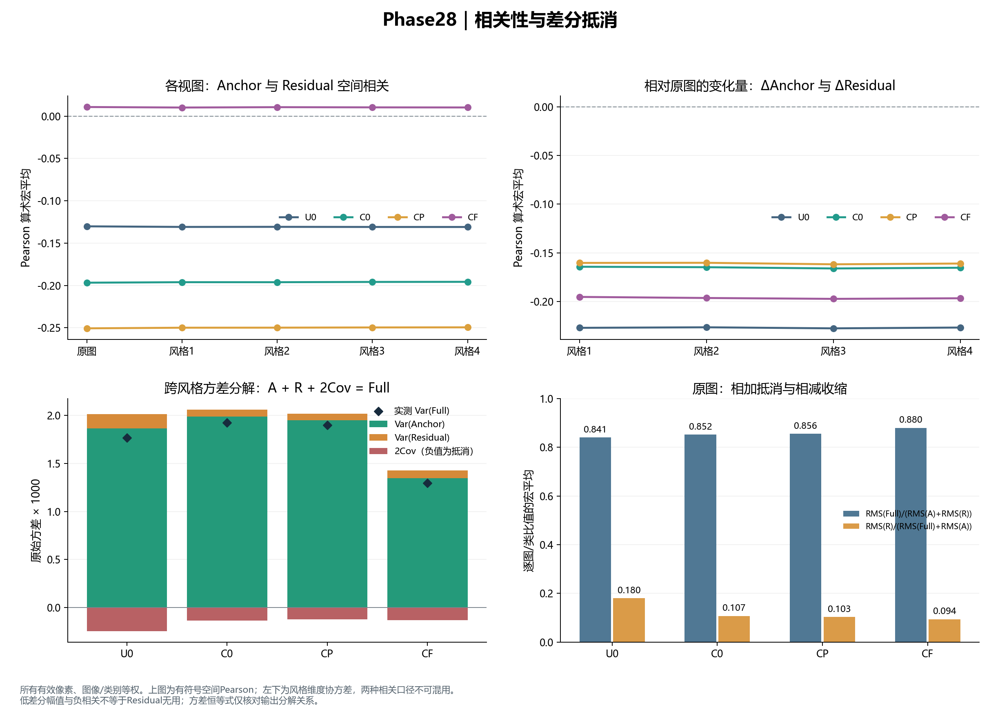
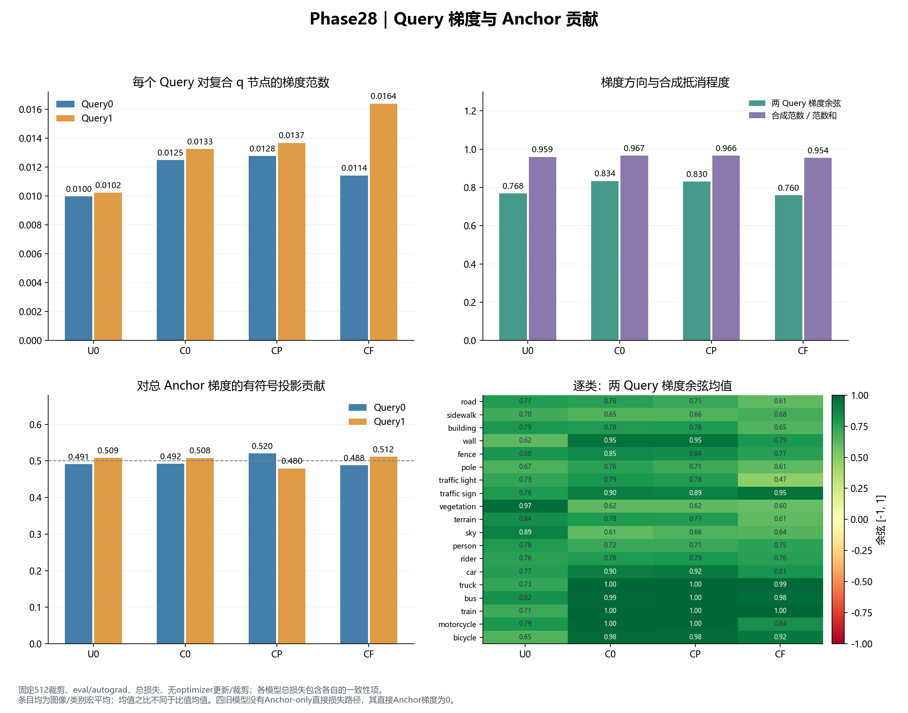
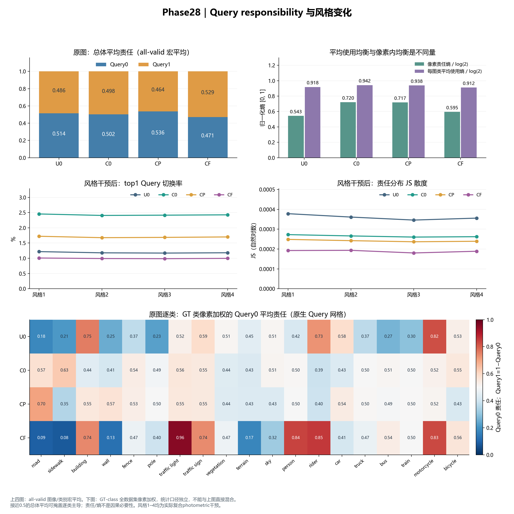
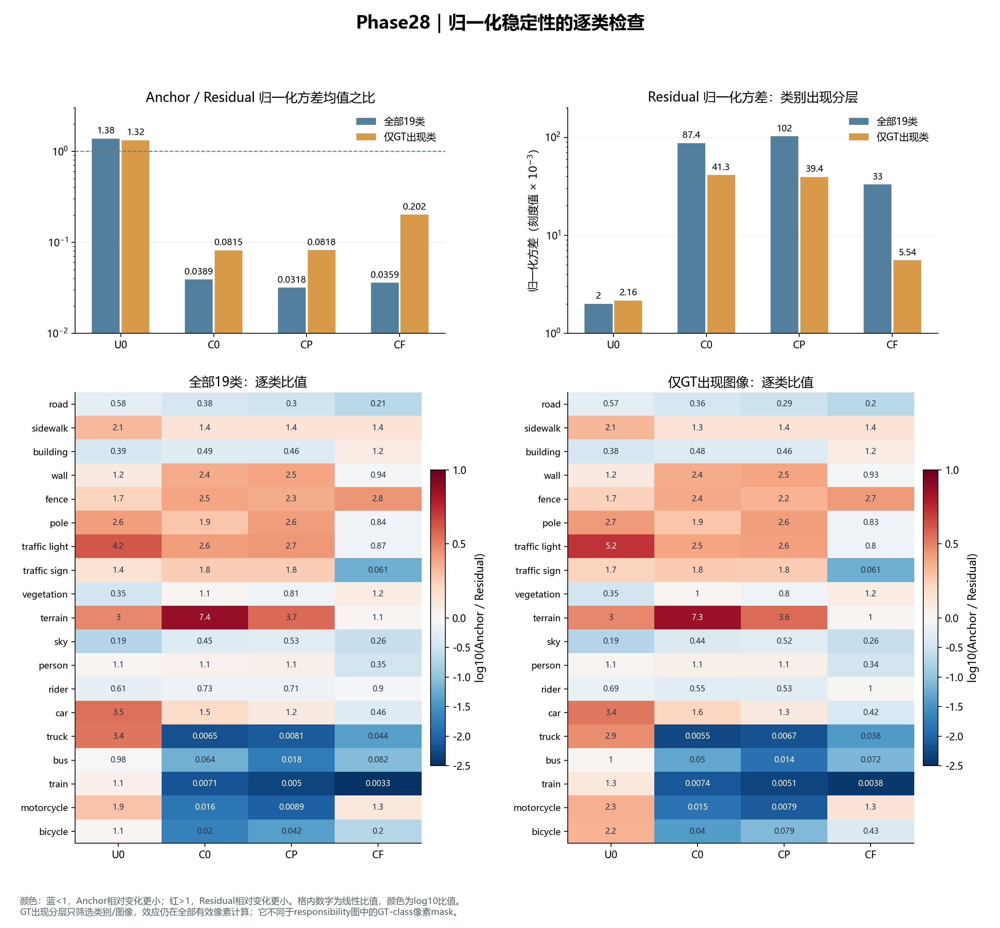

CausalQ · Phase28 实测诊断图册
U0：无中心化基线；C0：中心化基线；CP：中心化+预测KL；CF：中心化+Full CQE。
每模型2497张GTA5源域图像、五视图、一个已训练种子。图中量来自已接受的summary.json，无新训练或推理。
现有导出没有逐图分割预测或像素效应图，本图册不生成这类未提供的结果。图像分布分位数不是训练种子置信区间。
1. 幅值与稳定性
C0的原始Anchor方差更高，但归一化后Anchor相对变化远低于Residual。CF的Full方差下降同时RMS增加，不能解释为简单幅值塌缩。

下载SVG矢量图
2. 相关性与差分抵消
四组跨风格协方差均为负。Full的方差包含分量抵消；空间Pearson与风格协方差分开报告。

下载SVG矢量图
3. Query梯度与Anchor贡献
总损失的两Query平均梯度同向，整体合成范数比接近1。逐类平均也为正；这不排除个别图像的反向梯度。

下载SVG矢量图
4. Query责任分布
总体均值接近均衡可掩盖类别主导：CF的traffic light由Query0承担约95.7%，road由Query1承担约90.8%。

下载SVG矢量图
5. 类别出现分层
C0只有9/19个类别的Anchor归一化方差更低，总体均值不代表每个类别。CP的Residual归一化方差在全部类别宏平均下较C0更高，但在GT出现分层下略低。

下载SVG矢量图
原始数值和来源：plotted_metrics.json。仅源域描述，不据此推断泛化或因果必要性。